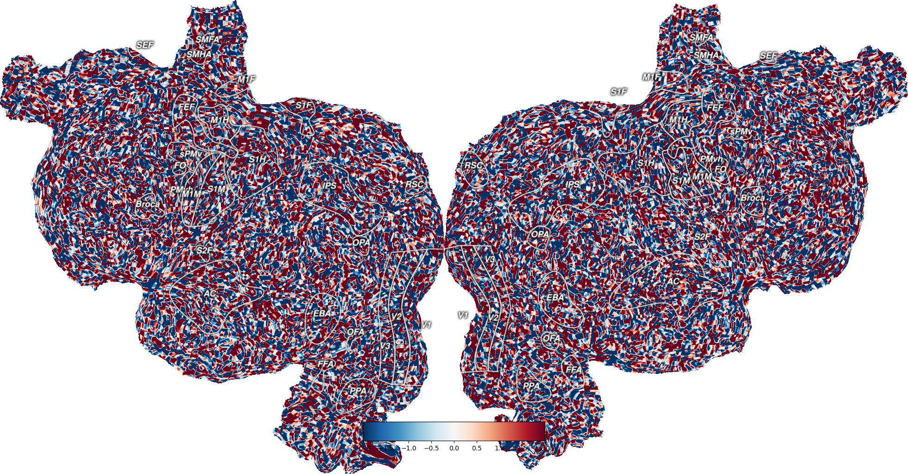

Note
Go to the end to download the full example code.
Dataset Arithmetic¶
This plots example volume data onto an example subject, S1, onto a flatmap using quickflat. In order for this to run, you have to have a flatmap for this subject in the pycortex filestore.
Once you have created a cortex.Volume object, you can manipulate it with normal arithmetic operators like +, -, , /, and *
- 
Generating a flatmap cache
** (inkscape:4347): WARNING **: 21:52:39.569: Failed to wrap object of type 'GtkRecentManager'. Hint: this error is commonly caused by failing to call a library init() function.
** (inkscape:4362): WARNING **: 21:52:40.545: Failed to wrap object of type 'GtkRecentManager'. Hint: this error is commonly caused by failing to call a library init() function.
** (inkscape:4375): WARNING **: 21:52:41.465: Failed to wrap object of type 'GtkRecentManager'. Hint: this error is commonly caused by failing to call a library init() function.
import cortex
import numpy as np
np.random.seed(1234)
import matplotlib.pyplot as plt
subject = 'S1'
xfm = 'fullhead'
# Creating a random dataset that is the shape for this transform with one
# entry for each voxel
test_data = np.random.randn(31, 100, 100)
# This creates a Volume object for our test dataset for the given subject
# and transform
vol_data = cortex.Volume(test_data, subject, xfm, vmin=-2, vmax=2)
cortex.quickshow(vol_data)
plt.show()
# Now you can do arithmetic with the Volume
vol_plus = vol_data + 1
cortex.quickshow(vol_plus)
plt.show()
# You can also do multiplication
vol_mult = vol_data * 4
cortex.quickshow(vol_mult)
plt.show()
Total running time of the script: (0 minutes 14.258 seconds)